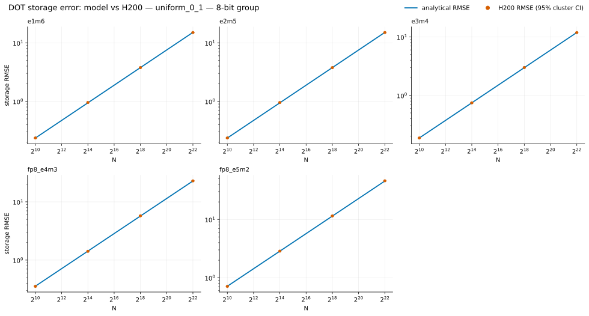
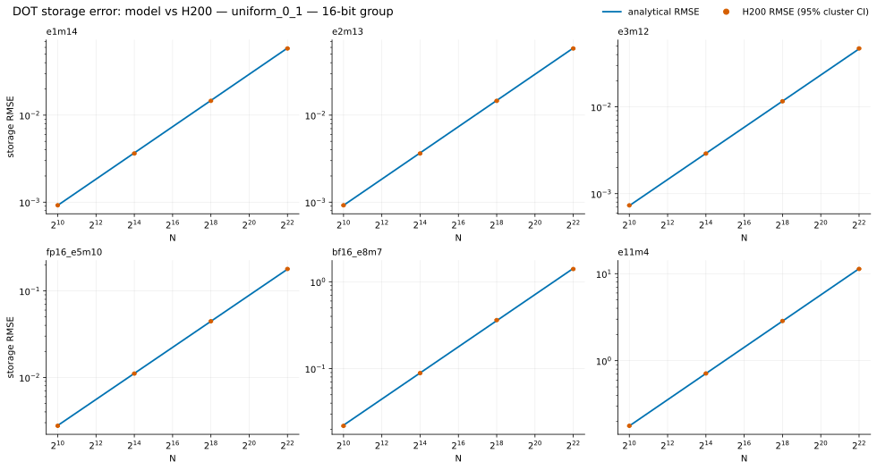
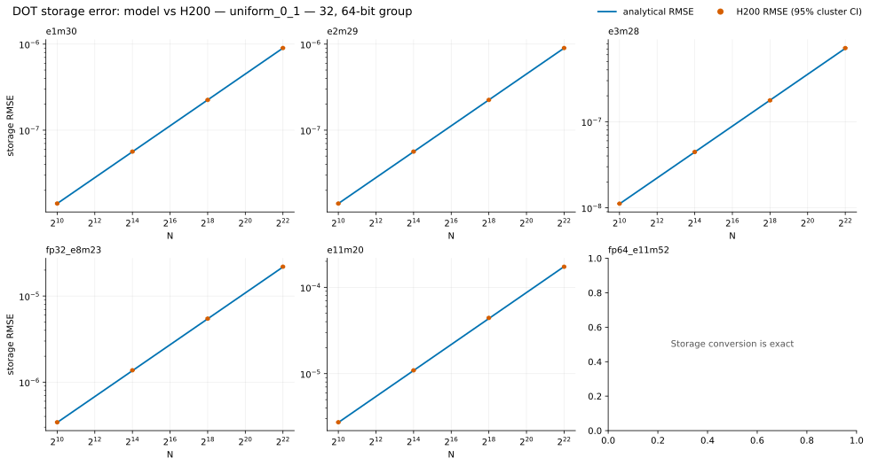
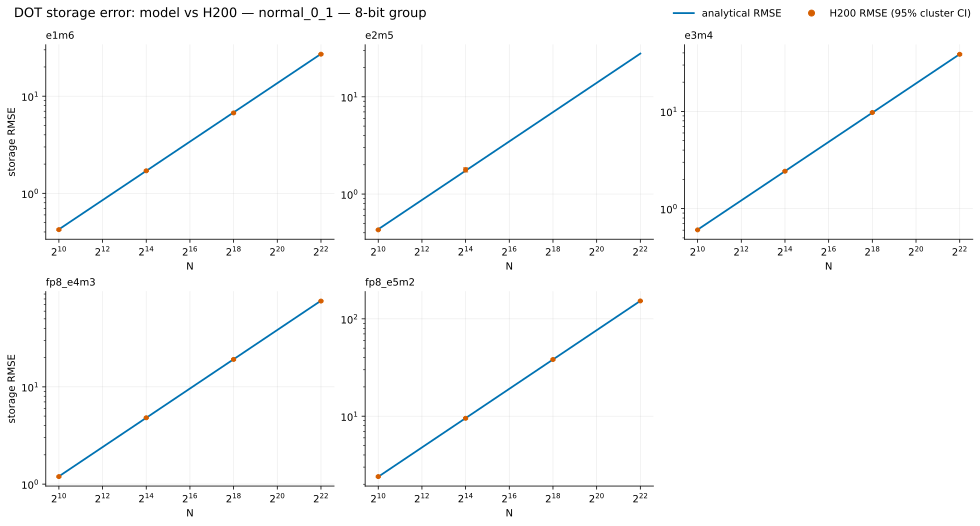
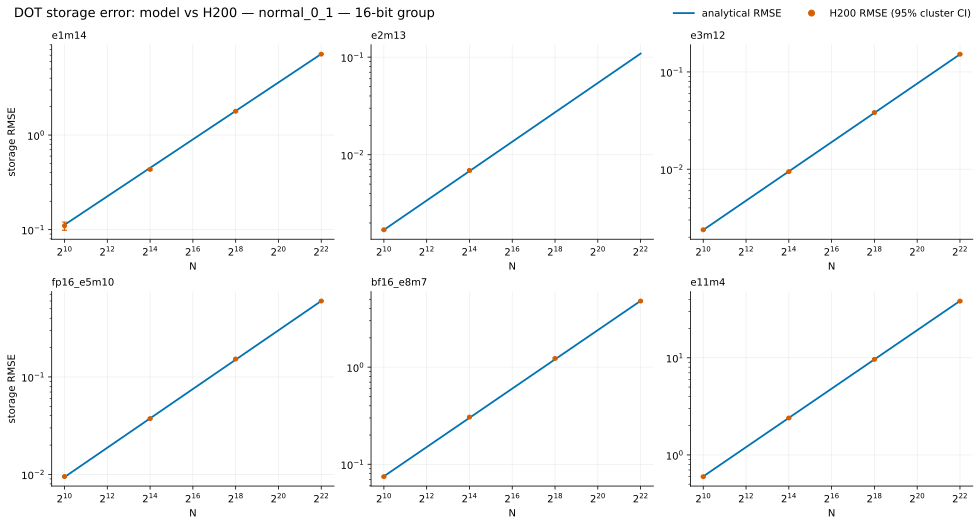
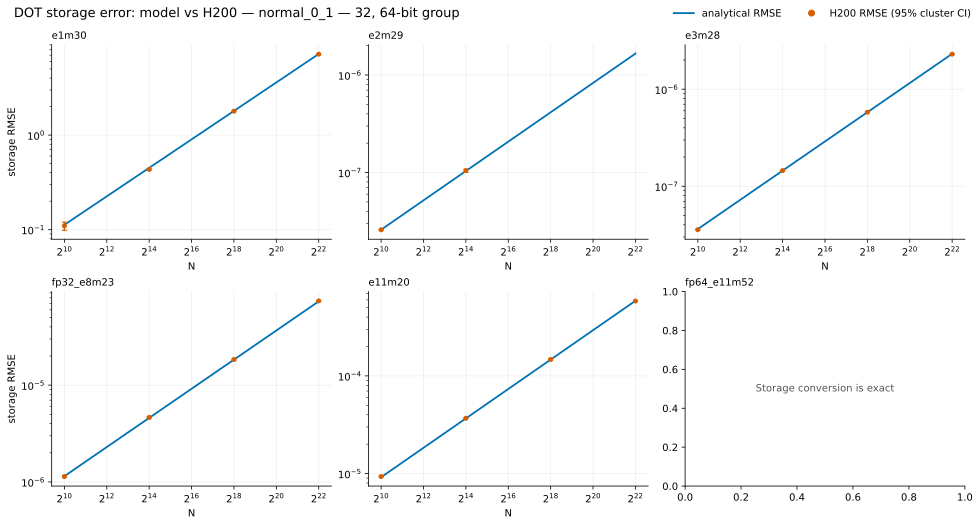

DOT accuracy
Measured storage RMSE versus the analytical model for every format and DOT length.
U(0,1) DOT
Each figure overlays H200 RMSE and its confidence interval on the analytical prediction.
8-bit

16-bit

32/64-bit

N(0,1) DOT
This distribution also exposes exponent-range failures in narrow custom layouts.
8-bit

16-bit

32/64-bit
